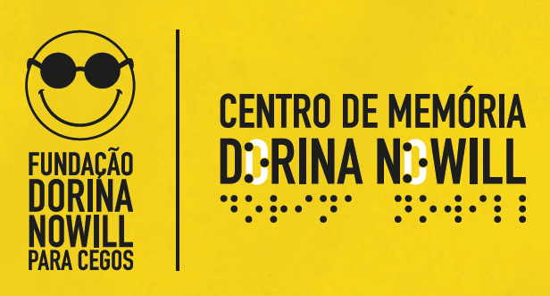
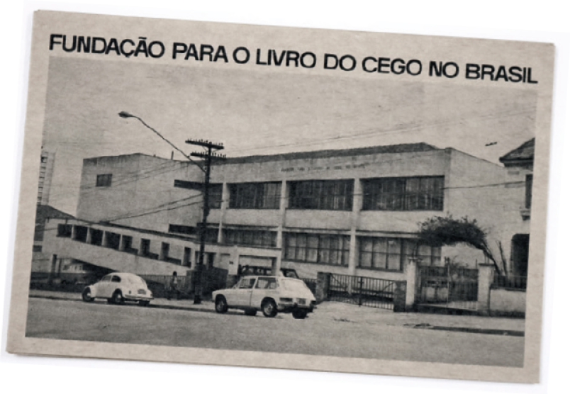
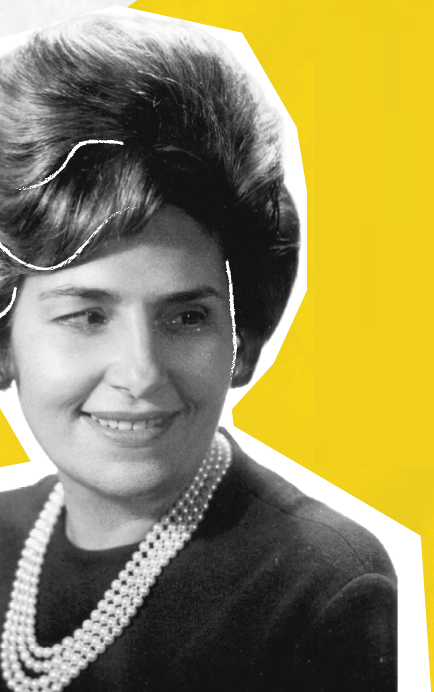
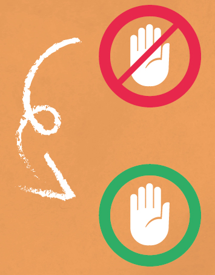
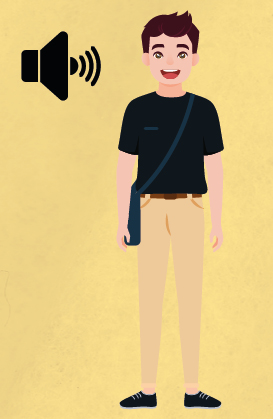
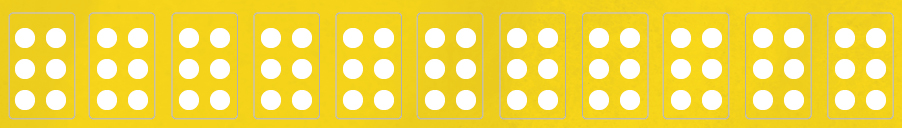
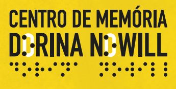
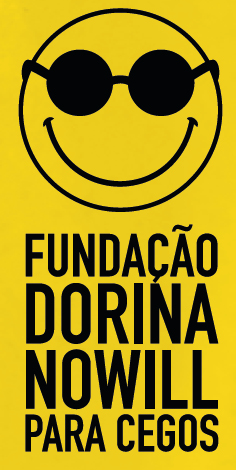
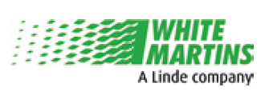

CENTRO DE MEMÓRIA NOWILL

O Centro de Memória Dorina Nowil , inaugurado em 2002, tem a missão de apresentar e preservar a história da luta das pessoa cegas e com baixa visão no Brasil e no mundo, trazendo o protagonismo de Dorina de Gouvêa Nowill e sua trajetória até a criação da Fundação Dorina Nowill para Cegos.
A ideia da exposição e visita ao espaço é que você faça uma imersão no universo da cessibilidade e inclusão.
Então, fica o nosso convite: entre, sinta, interaja e faça parte!


Acesse a versão digital acessível
2
A SUA EXPERIÊNCIA COMEÇA AQUI!
• Você encontrou um baú com alguns objetos importantes para a pesquisa histórica sobre uma mulher chamada Dorina Nowill.
E aí, encontrou dicas para nos dizer quem foi Dorina?
![Imagem: Fotomontagem. Na parte inferior, ilustração de um baú marrom e amarelo aberto. Dele saem: fotografia de um passaporte com imagem em preto e branco de uma mulher à esquerda e informações escritas acima, como o nome Dorina de Gouvêa Nowill; capa de gibi da Turma da Mônica; com ilustração da Mônica segurando um coelho azul-claro, ao lado, Dórinha e um cão-guia; capa do livro Dorina Nowill: um relato da luta pela inclusão social dos cégos, com a fotografia de Dorina Nowill, mulher com cabelos curtos usando óculos escuros e sorrindo; e fotografia em preto e branco de um homem segurando um bebê no colo, Dorina Nowill ao lado; e em frente, dois meninos e duas meninas, todos sorriem. Fim da imagem.](../resources/images/image_Image12665.png)
• Escolha um ambiente e memorize bem!
Agora, feche os olhos por 30 segundos e, em seguida, abra-os.
Traduza em palavras o que existe nesse espaço.
Pense em todos os detalhes que conseguir.
3
• Visitas em museus normalmente vêm acompanhadas de lembretes como: “Favor não mexer, é arte!” ou “Veja com os olhos e não com as mãos!”. Mas você já imaginou um espaço em que se pode tocar em tudo? Por aqui, isso é realidade!
Então, conte para nós: quantos itens você consegue “ver” com as suas mãos?

• Você acordou e se preparou para aquela festa especial: escolheu a sua roupa favorita, arrumou o cabelo e colocou os melhores acessórios. Chegando lá, encontrou com um amigo cego que estava curioso para saber qual foi a sua escolha. E agora, como você faria sua audiodescrição para que ele soubesse como você está elegante? E ao acordar no dia seguinte, o que mudaria na sua audiodescrição?

• Agora que conheceu um pouco mais sobre o Sistema Braille, vamos ver se já está craque nos seis pontos!
Se você fosse resumir a sua visita no Centro de Memória Dorina Nowill em uma palavra, qual seria? Escreva em pontos braille ou preencha as células braille abaixo!

4

Caso este panfleto seja o seu primeiro contato com o Centro de Memória Dorina Nowill, aproveite para fazer a sua visita e entender como tudo acontece por aqui!
Se você já nos visitou e gostou, convide mais pessoas para nos conhecer!
Para fazer uma visita por aqui é tudo muito simples e gratuito, basta agendar com antecedência pelo e-mail: centrodememoria@fundacaodorina.org.br
Quer saber mais? Então, acesse o site para mais informações e navegue pelo nosso acervo digital acessível:
Horário: Segunda a sexta-feira, das 8h às 17h.
Linhas 1 – Azul e 5 – Lilás.
Estação Shopping Santa Cruz e Estação Hospital São Paulo.

fundacaodorina.org.br
fundacaodorinanowill
fundacaodorina
fundacaodorina
fundacaodorina
Rua Doutor Diogo de Faria, 558
Vila Clementino - São Paulo |
Fone 1: (11) 5087-0955 |
centrodememoria@fundacaodorina.org.br
